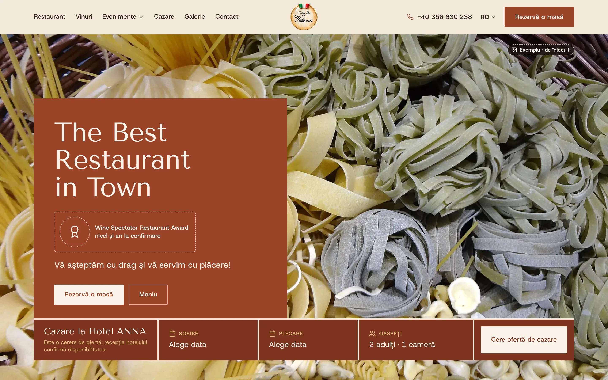
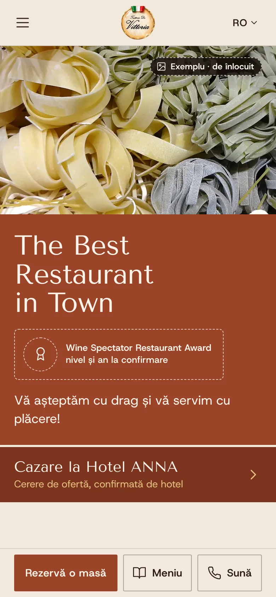
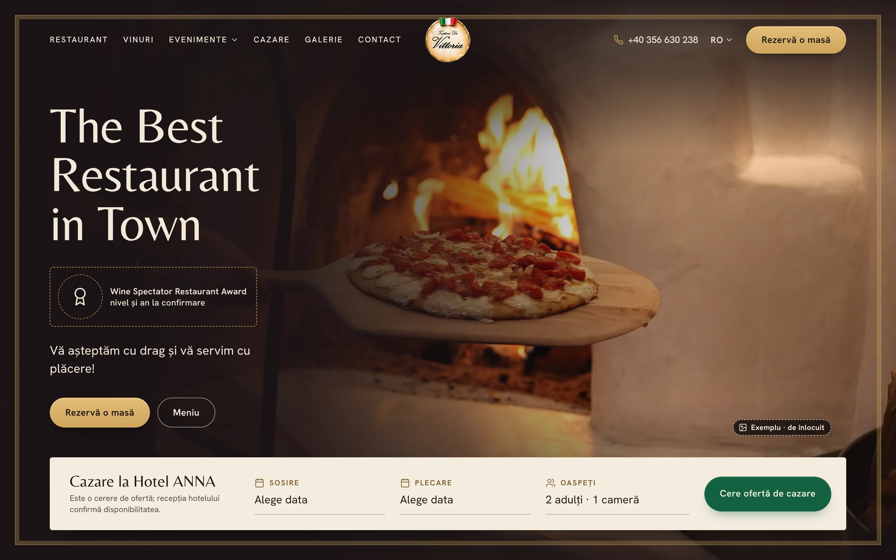
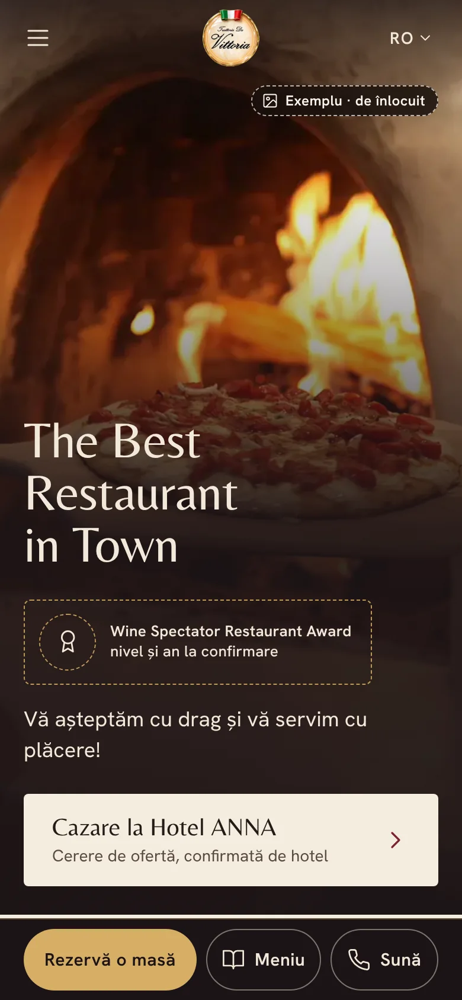
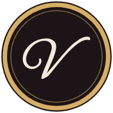

<title>Trattoria · Direcții F2</title>
<meta name="claude:viewport-fit-sides" content="cover">
<meta name="robots" content="noindex, nofollow">
<link rel="preconnect" href="https://fonts.googleapis.com">
<link rel="stylesheet" href="https://fonts.googleapis.com/css2?family=Belleza&family=Hanken+Grotesk:wght@400;500;600&family=Host+Grotesk:wght@400;500;600&family=Tenor+Sans&display=swap">
<style>
/* Pagina de decizie GATE 2: o coloană de citit, cu cuprins lipit sus; fiecare direcție își arată capturile pe materialul ei. */
:root {
  --bg: #F7F2EA; --surface: #FFFDF9; --fg: #241A17; --fg-2: #5A4A42; --line: #DDD1C0; --accent: #7B2333; --accent-2: #9A4428;
  --a-ground: #F2E8DC; --a-field: #9A4428; --b-ground: #1C1416; --b-foil: #D6AE66; --ok: #2F5D3A;
  --font-ui: 'Hanken Grotesk', 'Segoe UI', system-ui, sans-serif;
  --font-display: 'Belleza', 'Optima', 'Candara', serif;
  color-scheme: light;
}
@media (prefers-color-scheme: dark) { :root:not([data-theme="light"]) { --bg: #171213; --surface: #211A1B; --fg: #F1E8DB; --fg-2: #C2B4A3; --line: #3A2F2E; --accent: #E0A9B2; --accent-2: #E59A78; --ok: #8FC79A; color-scheme: dark; } }
:root[data-theme="dark"] { --bg: #171213; --surface: #211A1B; --fg: #F1E8DB; --fg-2: #C2B4A3; --line: #3A2F2E; --accent: #E0A9B2; --accent-2: #E59A78; --ok: #8FC79A; color-scheme: dark; }
* { box-sizing: border-box; }
body { background: var(--bg); color: var(--fg); font: 16px/1.6 var(--font-ui); margin: 0; }
.wrap { max-width: 1120px; margin: 0 auto; padding-left: max(16px, env(safe-area-inset-left, 0px)); padding-right: max(16px, env(safe-area-inset-right, 0px)); }
h1, h2, h3 { font-family: var(--font-display); font-weight: 400; text-wrap: balance; margin: 0; letter-spacing: -0.01em; }
h1 { font-size: clamp(34px, 6vw, 56px); line-height: 1.05; }
h2 { font-size: clamp(26px, 4vw, 36px); line-height: 1.15; margin-bottom: 12px; }
h3 { font-size: 22px; line-height: 1.2; margin: 24px 0 8px; }
p { margin: 0 0 12px; max-width: 70ch; }
a { color: var(--accent); text-underline-offset: 0.2em; }
:focus-visible { outline: 2px solid var(--accent); outline-offset: 3px; }
header.top { padding-block: 40px 24px; }
.lead { font-size: 19px; color: var(--fg-2); max-width: 62ch; }
nav.toc { position: sticky; top: env(safe-area-inset-top, 0px); z-index: 5; background: var(--bg); border-bottom: 1px solid var(--line); }
body::before { content: ""; position: fixed; inset: 0 0 auto; height: env(safe-area-inset-top, 0px); z-index: 10; background: var(--bg); }
nav.toc ul { list-style: none; display: flex; gap: 4px 18px; flex-wrap: wrap; margin: 0; padding-block: 10px; }
nav.toc a { color: var(--fg); text-decoration: none; font-size: 14px; font-weight: 500; padding: 6px 0; display: inline-block; border-bottom: 1px solid transparent; }
nav.toc a:hover { border-bottom-color: var(--accent); }
section { padding-block: 40px; border-bottom: 1px solid var(--line); scroll-margin-top: 56px; }
.verdict { display: grid; gap: 16px; grid-template-columns: repeat(auto-fit, minmax(240px, 1fr)); margin-top: 20px; }
.stat { background: var(--surface); border: 1px solid var(--line); border-radius: 6px; padding: 16px 18px; min-width: 0; }
.stat .num { font: 600 30px/1.1 var(--font-ui); font-variant-numeric: tabular-nums; }
.stat .lbl { font-size: 14px; color: var(--fg-2); }
.pass { color: var(--ok); font-weight: 600; }
.shots { display: grid; grid-template-columns: minmax(0, 3.2fr) minmax(0, 1fr); gap: 16px; align-items: start; margin: 16px 0; }
.shots figure { margin: 0; min-width: 0; }
.shots img { width: 100%; height: auto; display: block; border-radius: 6px; border: 1px solid var(--line); }
.shots figcaption { font-size: 13px; color: var(--fg-2); margin-top: 6px; }
@media (max-width: 720px) { .shots { grid-template-columns: 1fr; } .shots .phone { max-width: 280px; } }
.swatches { display: flex; flex-wrap: wrap; gap: 10px; margin: 12px 0; }
.sw { width: 132px; border: 1px solid var(--line); border-radius: 6px; overflow: hidden; background: var(--surface); font-size: 12.5px; }
.sw b { display: block; height: 48px; }
.sw span { display: block; padding: 6px 8px; line-height: 1.35; }
.sw code { font-size: 12px; }
.specimen { border-radius: 6px; padding: 18px 20px; margin: 12px 0; }
.specimen .d { font-size: 34px; line-height: 1.1; }
.specimen .t { font-size: 16px; margin-top: 8px; }
.spec-a { background: var(--a-ground); color: #2B1D17; }
.spec-a .d { font-family: 'Tenor Sans', 'Optima', sans-serif; } .spec-a .t { font-family: 'Host Grotesk', sans-serif; }
.spec-b { background: var(--b-ground); color: #F3E9DA; }
.spec-b .d { font-family: 'Belleza', 'Optima', sans-serif; } .spec-b .t { font-family: 'Hanken Grotesk', sans-serif; }
.spec-b .t span { color: var(--b-foil); }
.tbl { overflow-x: auto; margin: 12px 0; }
table { border-collapse: collapse; width: 100%; font-size: 14.5px; min-width: 560px; }
th, td { text-align: left; padding: 9px 10px; border-bottom: 1px solid var(--line); vertical-align: top; }
th { font-weight: 600; font-size: 13px; color: var(--fg-2); }
td.n { font-variant-numeric: tabular-nums; white-space: nowrap; }
.btn { display: inline-flex; align-items: center; min-height: 44px; padding: 0 18px; border-radius: 999px; border: 1px solid var(--accent); color: var(--accent); text-decoration: none; font-weight: 600; font-size: 15px; margin: 4px 8px 4px 0; }
.btn.solid { background: var(--accent); color: var(--bg); }
.pick { display: inline-block; font-size: 13px; font-weight: 600; color: var(--accent); border: 1px solid var(--accent); border-radius: 999px; padding: 2px 10px; vertical-align: middle; margin-left: 8px; font-family: var(--font-ui); letter-spacing: 0; }
.ask { background: var(--surface); border: 1px solid var(--accent); border-radius: 8px; padding: 20px; }
.ask ol { margin: 8px 0 0; padding-left: 20px; }
pre.mermaid { background: var(--surface); border: 1px solid var(--line); border-radius: 6px; padding: 12px; overflow-x: auto; }
footer.credit { text-align: center; font-size: 13px; color: var(--fg-2); padding-block: 32px 40px; line-height: 1.7; }
</style>

<header class="top wrap">
  <h1>Trattoria da Vittoria · două direcții de design</h1>
  <p class="lead">GATE 2 · 24 noiembrie 2026. <strong>Alin a ales B · Carta</strong>, cu butoanele verzi în loc de bordo, fonturi gratuite (setul de 4) și pictograma desenată de mine. Sistemul de design e în <code>docs/design-system.md</code>.</p>
</header>

<nav class="toc" aria-label="Cuprins"><ul class="wrap">
  <li><a href="#concluzie">Concluzie</a></li>
  <li><a href="#cotto">A · Cotto</a></li>
  <li><a href="#carta">B · Carta</a></li>
  <li><a href="#comparatie">Comparație</a></li>
  <li><a href="#contrast">Contrast</a></li>
  <li><a href="#fonturi">Fonturi</a></li>
  <li><a href="#lipsa">Ce lipsește</a></li>
  <li><a href="#dupa-go">După GO</a></li>
  <li><a href="#decizie">Decizia</a></li>
</ul></nav>

<main class="wrap">
  <section id="concluzie">
    <h2>Concluzie</h2>
    <p>Ambele direcții trec pragul de contrast cerut, 4,5:1, pe fiecare rând de text, măsurat pe pixelii reali de sub text, inclusiv peste fotografie. Fonturile sunt gratuite și apropiate de cele de pe vineyard.co.za, cu ș, ț, ă, â, î verificate în fișierul fontului. <strong>Recomand B · Carta</strong>: vizitatorul nr. 1 vine la cină, iar B pune în față seara, vinurile și premiul.</p>
    <div class="verdict">
      <div class="stat"><div class="num">5,09:1</div><div class="lbl">A · Cotto, cel mai slab rând de text (telefon și desktop)</div></div>
      <div class="stat"><div class="num">5,67:1</div><div class="lbl">B · Carta, cel mai slab rând (desktop); 6,82:1 pe telefon</div></div>
      <div class="stat"><div class="num">143 / 143</div><div class="lbl">rânduri de text peste 4,5:1 <span class="pass">· trec</span></div></div>
      <div class="stat"><div class="num">4 / 4</div><div class="lbl">fonturi cu ș ț ă â î corecte (virgulă, nu sedilă)</div></div>
    </div>
    <h3>Cum am ajuns aici</h3>
<pre class="mermaid">
flowchart LR
  P["PRODUCT.md<br/>3 întrebări cu Alin"] --> L["7 direcții posibile<br/>ordonate după potrivire"]
  L --> R{"Tragerea la sorți<br/>Impeccable"}
  R -->|"a ieșit nr. 6"| A["A · Cotto"]
  L -->|"alegerea mea, nr. 1"| B["B · Carta"]
  A --> M["Machete telefon + desktop"]
  B --> M
  M --> C["Contrast pe pixeli<br/>+ verificări Impeccable"]
  C --> G(["GATE 2<br/>alegi A sau B"])
  G --> D["design-system.md<br/>+ temă în Setări"]
</pre>
  </section>

  <section id="cotto">
    <h2>A · Cotto</h2>
    <p>Bucătăria de familie italiană, ziua. Teracota ține câmpuri întregi: placa din hero, bara de cazare, cardurile. Plăcile sunt despărțite de un rost de 3 px. Textul nu stă niciodată pe fotografie, ci pe teracotă (5,90:1).</p>
    <div class="shots">
      <figure><figcaption>Desktop, 1440 × 900, primul ecran</figcaption></figure>
      <figure class="phone"><figcaption>Telefon, 390 × 844</figcaption></figure>
    </div>
    <div class="swatches">
      <div class="sw"><b style="background:#F2E8DC"></b><span>Calce<br><code>#F2E8DC</code></span></div>
      <div class="sw"><b style="background:#9A4428"></b><span>Cotto<br><code>#9A4428</code></span></div>
      <div class="sw"><b style="background:#7C3420"></b><span>Cotto ars<br><code>#7C3420</code></span></div>
      <div class="sw"><b style="background:#2B1D17"></b><span>Cerneală<br><code>#2B1D17</code></span></div>
      <div class="sw"><b style="background:#E4BF7E"></b><span>Alamă, doar etichete<br><code>#E4BF7E</code></span></div>
    </div>
    <div class="specimen spec-a"><div class="d">Bucătăria. Descoperă meniul, fel cu fel.</div><div class="t">Tenor Sans pentru titluri, Host Grotesk pentru text. Ș Ț Ă Â Î ș ț ă â î</div></div>
    <p><a class="btn" href="f2/directia-a-cotto.html">Deschide macheta A</a><a class="btn" href="f2/capturi/f2-a-cotto-desktop-pagina.webp">Pagina întreagă, desktop</a></p>
  </section>

  <section id="carta">
    <h2>B · Carta <span class="pick">aleasă · GO 24.11.2026</span></h2>
    <p>Meniul și lista de vinuri, seara. Coperta e închisă, cu chenar dublu de folio auriu din inelul logo-ului. Paginile sunt hârtie crem, iar rândurile de meniu au linie de puncte. Cazarea e o fâșie de hârtie prinsă de copertă. După GO, butonul secundar e verde smarald, iar cel principal e auriu, cu luciu de folio.</p>
    <div class="shots">
      <figure><figcaption>Desktop, 1440 × 900, primul ecran</figcaption></figure>
      <figure class="phone"><figcaption>Telefon, 390 × 844</figcaption></figure>
    </div>
    <div class="swatches">
      <div class="sw"><b style="background:#1C1416"></b><span>Copertă<br><code>#1C1416</code></span></div>
      <div class="sw"><b style="background:#D6AE66"></b><span>Folio<br><code>#D6AE66</code></span></div>
      <div class="sw"><b style="background:#F5EDE0"></b><span>Hârtie<br><code>#F5EDE0</code></span></div>
      <div class="sw"><b style="background:#241A17"></b><span>Cerneală<br><code>#241A17</code></span></div>
      <div class="sw"><b style="background:#14613F"></b><span>Verde smarald<br><code>#14613F</code></span></div>
    </div>
    <div class="specimen spec-b"><div class="d">Pentru fiecare fel, un vin pe măsură.</div><div class="t">Belleza pentru titluri, Hanken Grotesk pentru text. <span>Ș Ț Ă Â Î ș ț ă â î</span></div></div>
    <p><a class="btn" href="f2/directia-b-carta.html">Deschide macheta B</a><a class="btn" href="f2/capturi/f2-b-carta-desktop-pagina.webp">Pagina întreagă, desktop</a></p>
  </section>

  <section id="comparatie">
    <h2>Comparație</h2>
    <div class="tbl"><table>
      <thead><tr><th></th><th>A · Cotto</th><th>B · Carta</th></tr></thead>
      <tbody>
        <tr><td>Lucrează cel mai bine pentru</td><td>Familii, cursurile de pizza, prânzul</td><td>Cina și ocaziile (vizitatorul nr. 1), vinurile, premiul</td></tr>
        <tr><td>Fonturi</td><td>Tenor Sans + Host Grotesk</td><td>Belleza (cel mai apropiat de Optima) + Hanken Grotesk</td></tr>
        <tr><td>Text peste fotografie</td><td>Niciodată (stă pe teracotă)</td><td>Da, cu umbră caldă; minimum 7,97:1 pe telefon</td></tr>
        <tr><td>Bara de cazare</td><td>Rând de plăci pe cotto ars</td><td>Fâșie de hârtie</td></tr>
        <tr><td>Mișcare</td><td>Plăcile se așază una după alta (620 ms)</td><td>Chenarul de folio se trasează o dată</td></tr>
        <tr><td>Fotografii cerute</td><td>Zi, făină, mâini, paste</td><td>Seară, cuptor, pahare, oameni la masă</td></tr>
        <tr><td>Riscul</td><td>Fotografiile reci se bat cu teracota</td><td>Negru cu auriu poate părea scump; îl echilibrează hârtia și fotografiile cu oameni</td></tr>
      </tbody>
    </table></div>
    <p>Comun ambelor: bara fixă de jos pe telefon (Rezervă o masă · Meniu · Sună), insigna lângă tagline (72 px pe telefon, 96 px pe desktop), eticheta „Exemplu · de înlocuit” cu iconiță și text, <code>prefers-reduced-motion</code> respectat și ținte de atingere de 48–52 px.</p>
  </section>

  <section id="contrast">
    <h2>Contrast măsurat</h2>
    <p>Pentru fiecare rând de text, culoarea lui față de fiecare pixel de sub el, cu textul ascuns. Raportez percentila 5 (pixelul aproape cel mai slab). Prag: 4,5:1 pentru tot textul.</p>
    <div class="tbl"><table>
      <thead><tr><th>Element</th><th>A telefon</th><th>A desktop</th><th>B telefon</th><th>B desktop</th></tr></thead>
      <tbody>
        <tr><td>Tagline (h1)</td><td class="n">5,90</td><td class="n">5,90</td><td class="n">7,97 (peste foto)</td><td class="n">14,34 (peste foto)</td></tr>
        <tr><td>Insigna (text)</td><td class="n">5,90</td><td class="n">5,90</td><td class="n">13,39</td><td class="n">14,87</td></tr>
        <tr><td>Subtitlul</td><td class="n">5,90</td><td class="n">5,90</td><td class="n">13,13</td><td class="n">14,35</td></tr>
        <tr><td>„Rezervă o masă”</td><td class="n">5,90</td><td class="n">5,90</td><td class="n">8,70</td><td class="n">8,70</td></tr>
        <tr><td>Bara de cazare: etichete</td><td class="n">—</td><td class="n">5,09</td><td class="n">—</td><td class="n">5,67</td></tr>
        <tr><td>Antet: telefon, RO</td><td class="n">13,44</td><td class="n">13,44</td><td class="n">6,82</td><td class="n">7,71 / 7,84</td></tr>
        <tr><td>Butonul verde (după GO)</td><td class="n">—</td><td class="n">—</td><td class="n">6,43</td><td class="n">6,43</td></tr>
        <tr><td>„Exemplu · de înlocuit”</td><td class="n">13,02</td><td class="n">12,83</td><td class="n">12,97</td><td class="n">12,83</td></tr>
        <tr><td><strong>Minimul paginii</strong></td><td class="n"><strong>5,09</strong></td><td class="n"><strong>5,09</strong></td><td class="n"><strong>6,82</strong></td><td class="n"><strong>5,67</strong></td></tr>
      </tbody>
    </table></div>
    <p>Reparat pe parcurs: în B, telefonul și „RO” din antet stăteau peste tencuiala luminoasă a cuptorului (4,18:1 și 4,29:1). Acum au 7,71:1 și 7,84:1. Culori interzise pentru text, păstrate doar ca decor: alamă pe cotto (3,73:1) și cotto deschis pe calce (2,78:1).</p>
  </section>

  <section id="fonturi">
    <h2>Fonturi</h2>
    <p>Vineyard.co.za folosește Optima pentru titluri și PP Mori pentru text. Amândouă sunt comerciale; prețul licenței web nu l-am verificat. Propun echivalente gratuite, cu licență OFL, găzduite pe site:</p>
    <div class="tbl"><table>
      <thead><tr><th>Font</th><th>Rol</th><th>Seamănă cu</th><th>ș ț ă â î</th></tr></thead>
      <tbody>
        <tr><td style="font-family:'Belleza',serif;font-size:18px">Belleza</td><td>titluri B</td><td>Optima</td><td class="pass">da</td></tr>
        <tr><td style="font-family:'Tenor Sans',serif;font-size:18px">Tenor Sans</td><td>titluri A</td><td>Optima, mai lat</td><td class="pass">da</td></tr>
        <tr><td style="font-family:'Hanken Grotesk',sans-serif;font-size:17px">Hanken Grotesk</td><td>text B</td><td>PP Mori</td><td class="pass">da</td></tr>
        <tr><td style="font-family:'Host Grotesk',sans-serif;font-size:17px">Host Grotesk</td><td>text A</td><td>PP Mori</td><td class="pass">da</td></tr>
      </tbody>
    </table></div>
    <p>Respins: Marcellus, care nu are ș și ț cu virgulă (U+0218–021B lipsesc).</p>
  </section>

  <section id="lipsa">
    <h2>Ce lipsește</h2>
    <p>Numerele sunt cele din <code>docs/materiale-necesare.md</code>.</p>
    <div class="tbl"><table>
      <thead><tr><th>#</th><th>Ce</th><th>Stare</th></tr></thead>
      <tbody>
        <tr><td class="n">1, 3</td><td>Logo Trattoria, logo ANNA</td><td class="pass">primite; în Biblioteca media pe producție</td></tr>
        <tr><td class="n">2</td><td>Logo pe fundal închis</td><td>nu mai e necesar</td></tr>
        <tr><td class="n">4</td><td>Pictograma de filă</td><td class="pass">desenată (D-43)</td></tr>
        <tr><td class="n">7–9</td><td>Clipurile și posterele hero</td><td>mai târziu (cum ai cerut); acum fotografii provizorii</td></tr>
        <tr><td class="n">31</td><td>Fotografiile pentru direcția aleasă</td><td>5–8 fotografii, în locul celor provizorii de pe Wikimedia Commons</td></tr>
      </tbody>
    </table></div>
  </section>

  <section id="dupa-go">
    <h2>După GO</h2>
    <p>Ce ai cerut și ce s-a făcut:</p>
    <div class="tbl"><table>
      <thead><tr><th>Cerere</th><th>Rezultat</th></tr></thead>
      <tbody>
        <tr><td>Butoane mai atractive, verde în loc de roșu</td><td>Verde smarald <code>#14613F</code> (familia verdelui din steag), contrast 6,43:1. Butonul principal e auriu, cu luciu de folio (8,63:1). Pe copertă, verdele nu trece (2,42:1), deci acolo butonul rămâne auriu.</td></tr>
        <tr><td>Variante de fonturi pentru restaurant și hotel</td><td><a href="f2/fonturi.html">8 perechi gratuite</a>, toate cu ș ț ă â î verificate, pe copertă și pe hârtie</td></tr>
        <tr><td>Cât costă fonturile vineyard</td><td>Optima Nova Regular: 57,99 USD pentru 10.000 de afișări pe lună. PP Mori: de la 40 USD pe licență și greutate, 1 an pentru firme. <strong>Estimare: ≥ 178 USD în primul an</strong>, plus licențe separate pe fiecare restaurant</td></tr>
        <tr><td>Setul de 4</td><td>Belleza, Tenor Sans (titluri); Hanken Grotesk, Host Grotesk (text). Se aleg din Setări restaurant</td></tr>
        <tr><td>Favicon desenat</td><td> Disc în culoarea copertei, inel de folio și „V” din Alex Brush, scriptul cel mai apropiat de logo</td></tr>
      </tbody>
    </table></div>
  </section>

  <section id="decizie">
    <h2>Decizia</h2>
    <div class="ask">
      <p><strong>Decis la GATE 2:</strong> D-41 (B · Carta, butoane verzi), D-42 (fonturi gratuite, setul de 4), D-43 (pictograma de filă).</p>
      <p>Rămâne deschis: vrei vreuna dintre <a href="f2/fonturi.html">variantele de fonturi</a> în locul perechii Belleza + Hanken Grotesk sau adăugată în set? Implicit rămâne Belleza + Hanken.</p>
    </div>
    <p style="margin-top:16px;font-size:14px;color:var(--fg-2)">Fotografii provizorii, Wikimedia Commons: Jared Tarbell (CC BY 2.0), David Adam Kess (CC BY-SA 4.0) și alți autori; lista completă e în <code>design/f2/assets/foto/credits.json</code>.</p>
  </section>
</main>

<footer class="credit wrap">
  <div>100% AI Solutions &amp; Agentic Work-Flows for SMEs</div>
  <div>Made with ❤️ by BizTech Consulting SRL</div>
  <div>Alin Labau - AI Project Manager | +40 772 295 031 | www.biztech.ro</div>
</footer>
